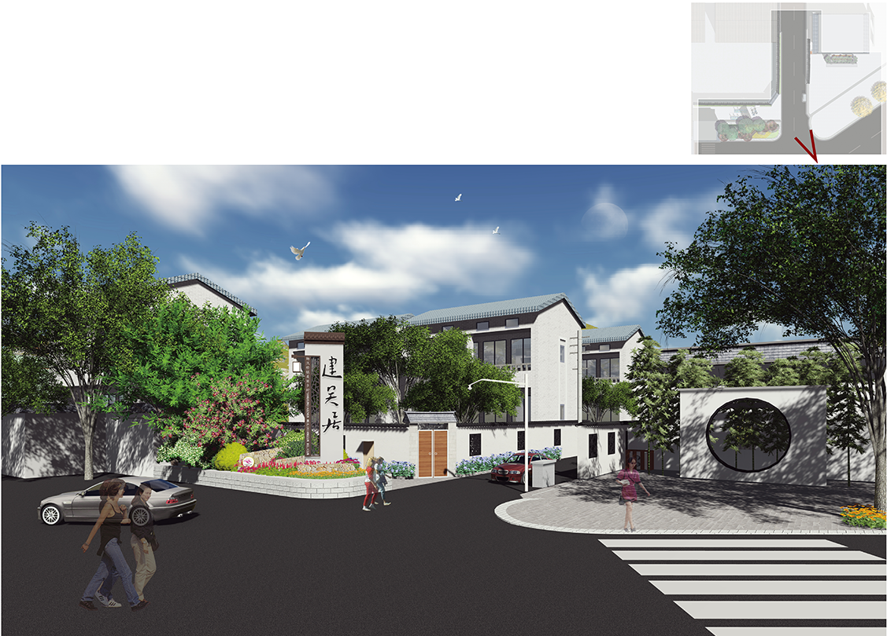
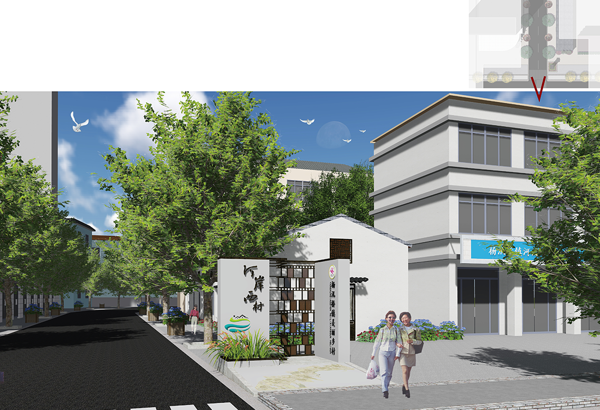
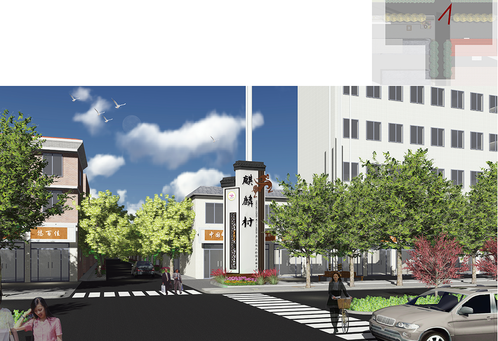
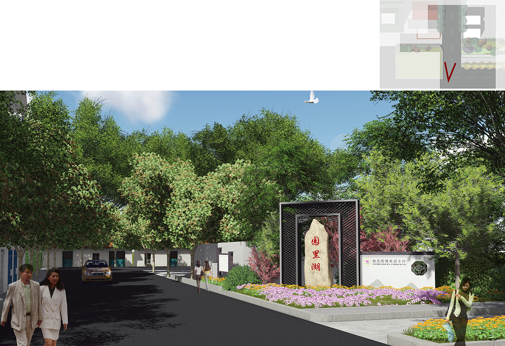
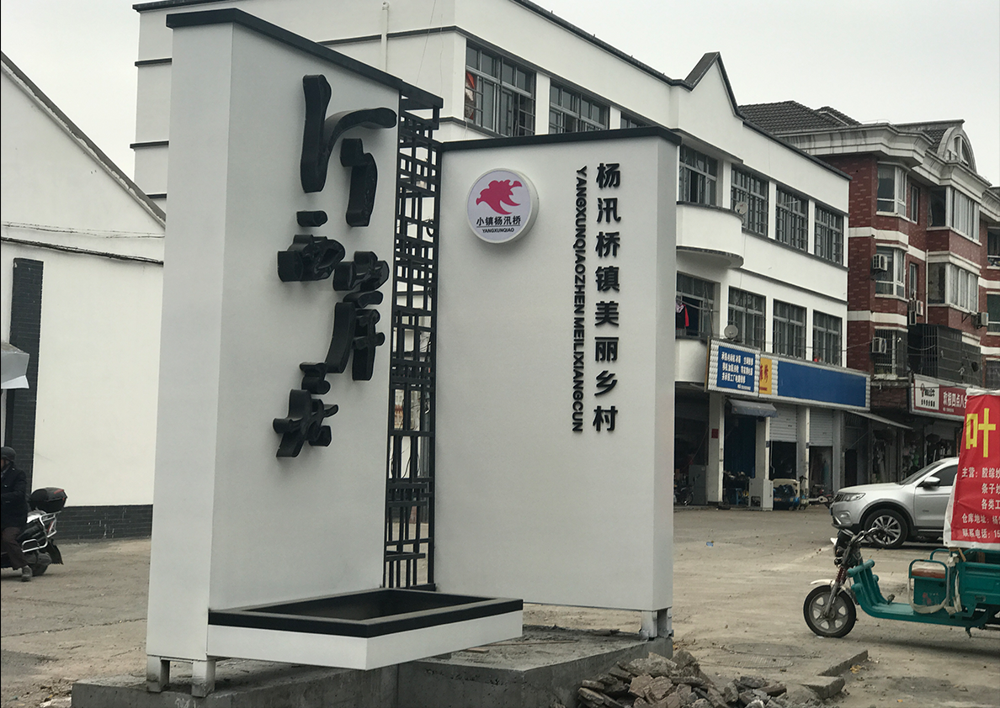
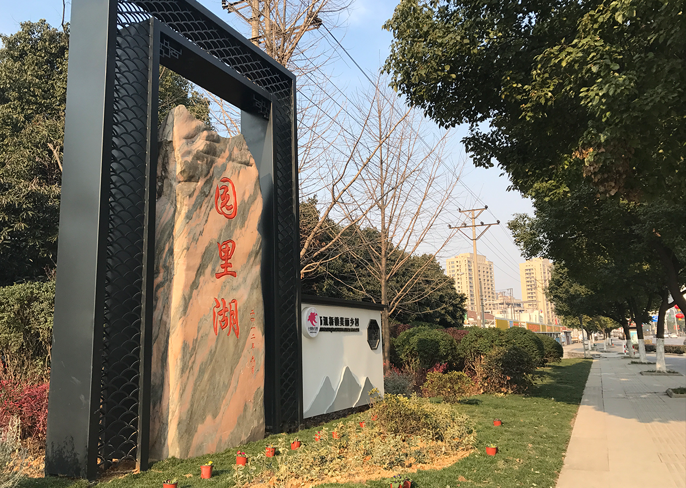

浙江绍兴市杨江大道村入口标志牌
Shaoxing City, Yangjiang Avenue Village entrance signs
项目地点：绍兴杨汛桥镇
设计时间：2017年
杨汛桥地处浙江绍兴，是一个历史悠久的江南山水小镇， 也是一个出历史名人的文化宝地，这里有培育英才的树人大 学，是充满创新、活力的文化之所。巧妙地文化与穿心的结 合，是打造“富美”乡村的关键。运用新中式风格的设计语言， 将中国传统的古典园林手法与现代简洁的设计语言相结合， 通过对于点、线、面的组合运用，彰显古典美的韵律感，发 扬现代美的创新精神。
     返回顶部
返回顶部